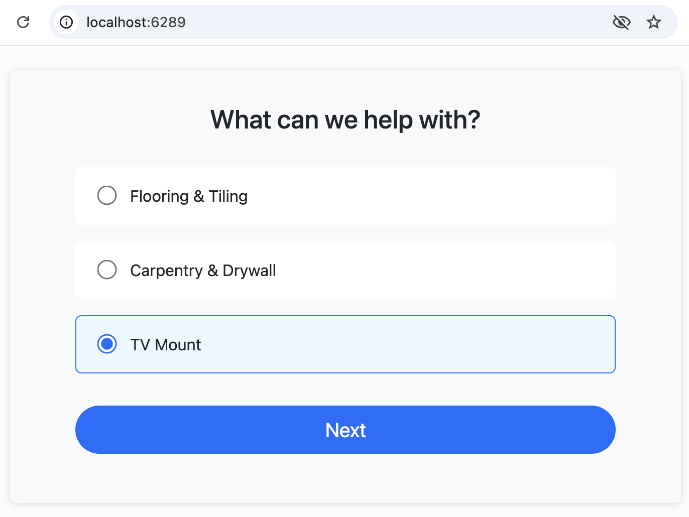
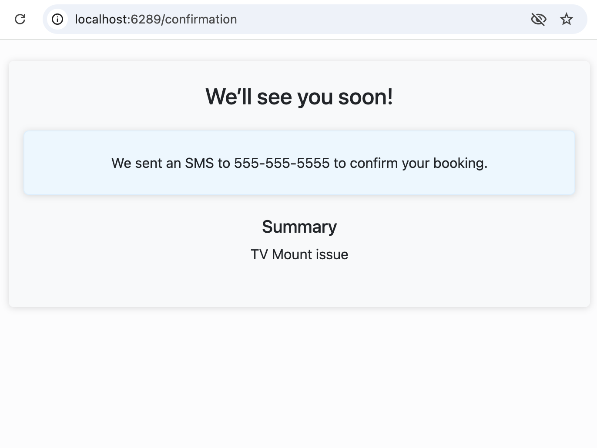

1. homeowners specify an issue

2. enter a phone number

3. and help will be on the way!

Hello, my name is Claudio. I have been coding with Ruby on Rails for 20 years. The project I recently built has the best Rails code I have ever written. I will share my experience on how I write beautiful code in Rails.
When I say beautiful code, I mean code I enjoy opening in the morning to read. For me, writing code is not different than writing a novel. It’s the artistic effort of choosing the most beautiful shape for your creation.
Let me show you what I have built: a website to contact handymen for help. Here’s a simplified overview:
The final product asks for the address, collects photos, shows estimates, and manages payments. It’s not a theoretical business case: it is real and makes money. It’s the website powering my company’s revenues.
This tutorial has three goals. First, I want you to fall in love with Ruby on Rails, again and again and again. Look at what I was able to build in a few months, and you will want to do the same.
I also want to narrate the transition from digital to agentic coding. What happens when our fingers stop being the ones typing the code? We’ll get to that in the second part, where we will switch from Textmate to Cursor.
Finally, I want to share beauty. How at ease we can feel in the codebases we write. How our aesthetic choices matter. Code is art and we are the creators. This is an ambitious project. Let’s get started! →